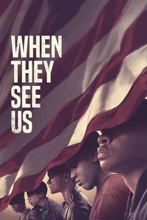

Play
Like
Dislike
Back

In 1989, a jogger was assaulted and raped in New York's Central Park, and five young people were
subsequently charged with the crime. The quintet, labeled the Central Park Five, maintained its
innocence and spent years fighting the convictions, hoping to be exonerated. This limited series spans a
quarter of a century, from when the teens are first questioned about the incident in the spring of 1989,
going through their exoneration in 2002 and ultimately the settlement reached with the city of New York
in 2014. The cast is full of Emmy nominees and winners, including Michael Kenneth Williams, John
Leguizamo, Felicity Huffman, and Blair Underwood. Oscar nominated and Emmy winner Ava DuVernay co-wrote
and directed the four episodes.